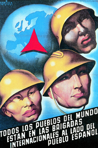
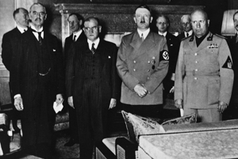

Lezione 19  La seconda guerrra mondiale
La seconda guerrra mondiale

-

SPAGNA
La Guerra di Spagna come prova generale della Seconda guerra mondiale: questo manifesto di propaganda in appoggio alle Brigate internazionali repubblicane mostra con eloquenza la portata del conflitto e il suo significato, che andava ben al di là dei confini iberici.

MONACO
La Conferenza di Monaco del 1938: intorno a Hitler e Mussolini i rappresentanti dell'Inghilterra (Chamberlain) e della Francia (Daladier) avallano le mire espansioniste tedesche ai danni della Cecoslovacchia.USA
Piegati dalle terribili conseguenze della crisi economica del 1929, gli americani si raccolgono intorno all'energica figura del presidente Franklin Delano Roosevelt (qui effigiato su una spilla), carismatico promotore del "Nuovo corso" che risolleverà l'America dalla Grande Depressione.